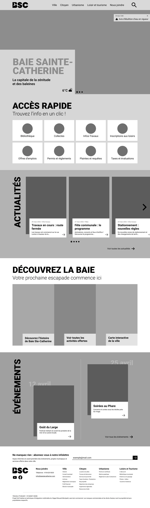
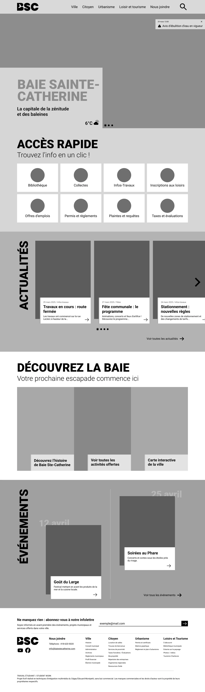
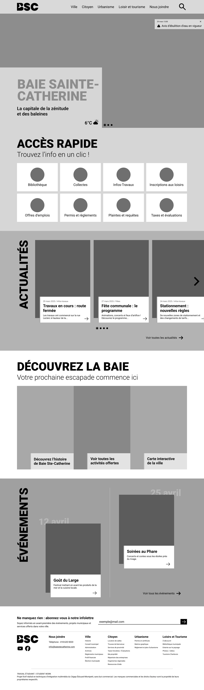

03
Wireframe

 

Design web | Projet étudiant
La refonte du site de Baie-Sainte-Catherine modernise l’image de la municipalité et simplifie l’accès à l’information, tout en mettant en valeur ses attraits et sa vitalité locale.
Logiciels utilisés
